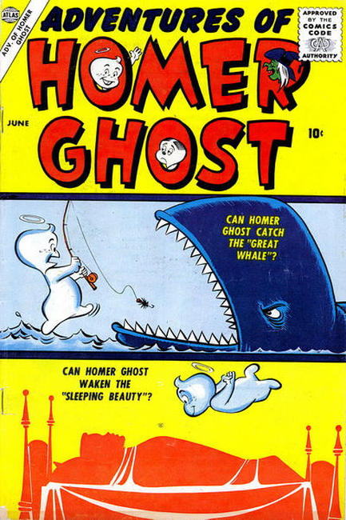

2 issues in 1957, pulbished by Atlas, Illustrated by Tony DiPreta, and written by Stan Lee
Children's Humor, unsuccessful Casper rip off
Stories:
- The gang accidentally helps to capture wanted criminal Tony Toughguy.
- Zelda won a prize at a costume party -- but she wasn't wearing a costume!
- The gang goes to see the movie "Moby Dick" and then goes out to hunt a real white whale.
- Homer falls asleep reading a book of fairy tales and meets Sleeping Beauty in a dream.